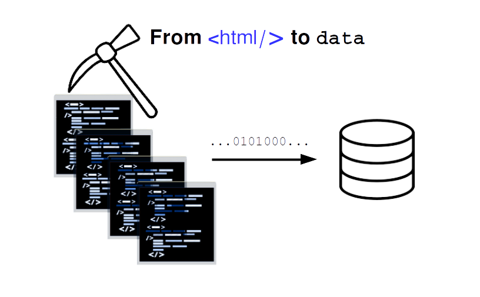
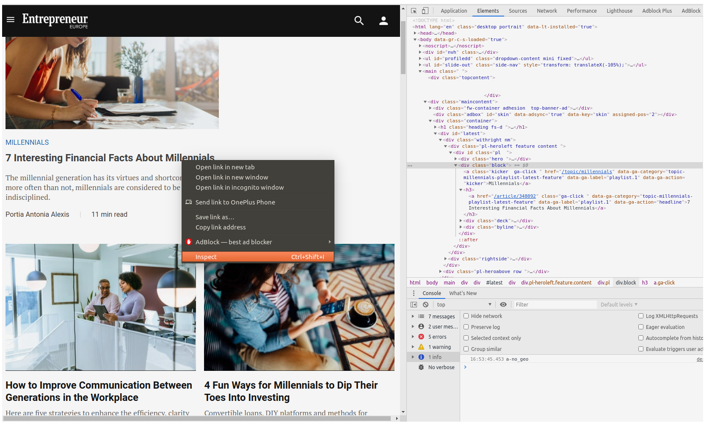
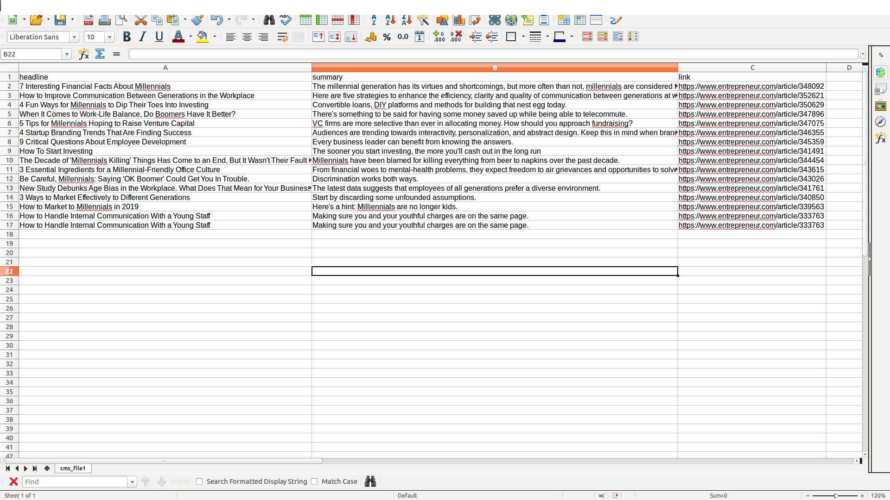

WEB SCRAPING

How to see the big picture?
Web scraping, the answer to get ahead in a world producing billions of data points in seconds.
What is it?
According to Wikipedia…
Web scraping, web harvesting, or web data extraction is data scraping used for extracting data from websites. Web scraping software may access the World Wide Web directly using the Hypertext Transfer Protocol or through a web browser. While web scraping can be done manually by a software user, the term typically refers to automated processes implemented using a bot or web crawler. It is a form of copying, in which specific data is gathered and copied from the web, typically into a central local database or spreadsheet, for later retrieval or analysis.
In short:
Web scraping, allows you to parse HTML code from websites and save it in a spreadsheet or database giving you data insights.
Why is it needed …
Everybody has to take decisions, and making informed decisions is key for any purpose you have. Web scraping allows you to make decisions and understand how other actors in your domain are getting ahead.
-
For businesses, this allows them to get the data, information, statistics, or knowledge of the latest trends and understand their competitors.
-
For analysts to allow them to get pricing intelligence, competitor analysis, market research, or sentiment analysis, you need to scrape actual data from the web to arrive at a suitable strategy.
Who needs it
You need this, If you work as:
- entrepreneur
- recruiter
- marketer
- researcher
- analyst
- journalist
- data scientist
- medical professional
- politician
- lawyer
- accountant
Let’s code.
For web scraping, we will need to install some python libraries like Beautiful Soup, requests and lxml
We need to pull data from websites, for this, we will use a Python library called Beaitiful Soup

Install the libraries
Beautiful Soup
To install Beaitiful Soup, only type in your terminal
- pip install beautifulsoup4
This will allow you to get the latest version of the library. Beautiful Soup sits on top of popular Python parsers like lxml and html5lib, allowing you to try out different parsing strategies or trade speed for flexibility.
Requests
The Requests library is the standard to make an HTTP request in python. Install the library typing in your terminal:
- pip install requests
lxml
We will needa “parser” for interpreting the HTML page. The lxml library combines the speed and XML feature completeness of libxml2 and libxslt libraries with the simplicity of a native Python API, mostly compatible but superior to the well-known ElementTree API. Install the library typing in your terminal:
- pip install lxml
Example
Extracting article information from a blog.
This example will show you how web scraping is valuable for journalists and business owners. Allowing them to get data from different sources for market analysis.
Importing our libraries
We need to import our Beautiful Soup (bs4) and requests libraries as follows:
from bs4 import BeautifulSoup
import requests
Now we are going to import an article from the entrepreneur blog on the topic millennials
For this, we are going to use the method GET from our requests library. The GET method indicates that you’re trying to get or retrieve data from a specified resource.
The HTTP request will send us a response 200, this code means the request was valid.
response = requests.get('https://www.entrepreneur.com/topic/millennials')
print(response)
<Response [200]>
We want to look at the code
Now, we want to make sure that we actually extract the HTML code from the request we made. Besides, we want to see the actual text result of the HTML page, you can read the .text property of this object.
source=response.text
#print(source)
Now, we can make the Soup
We will make a variable called soup that will call the Beautiful soup constructor, this will receive a string. In our case, these will be our source variable, and our lxml parser.
Note, that there are different parsers that we can use for this, but the difference in performance is not that big, feel free to try them all.
soup = BeautifulSoup(source, 'lxml')
Extracting information about the article
Our soup variable contains all the HTML code of the blog, however, we want to extract only what is interesting to us, like the title of the article and the summary.
To find out what we need to extract, we can go to our web page and open the developer tools as follows:
- right-click on the title of an article
- on the menu, click on inspect

Once we have localized the HTML tags that contain the information necessary for us, we can extract it with the find function. The information we need is:
- The title
- Summary of the article.
- Link
- Author
The title is contained inside an a tag, as well as the link URL, the summary is inside div with class deck and the author inside a span element.
Now, it is important to understand where these elements are wrapped on, so we can see that they are wrapped inside a div with class block
First, we will begin by extracting the wrapping element. For doing this, we will use the find() attribute from bs4, that receives the element div and the class.
The word class is a reserved word in Python, so this function uses **class_** to differentiate between these two.
Now we can extract a block of code and display it in our terminal, for this we will use the prettify() function. A pretty-printed block will allow you to see the indentation of the HTML code, so you can actually notice the tags and elements you need to access.
article = soup.find('div',class_='block')
print(article.prettify())
<div class="block">
<a class="kicker ga-click" data-ga-action="kicker" data-ga-category="topic-millennials-playlist-latest-feature" data-ga-label="playlist.1" href="/topic/millennials">
Millennials
</a>
<h3>
<a class="ga-click" data-ga-action="headline" data-ga-category="topic-millennials-playlist-latest-feature" data-ga-label="playlist.1" href="/article/348092">
7 Interesting Financial Facts About Millennials
</a>
</h3>
<div class="deck">
The millennial generation has its virtues and shortcomings, but more often than not, millennials are considered to be financially indisciplined.
</div>
<div class="byline">
<a class="ga-click" data-ga-action="authorname" data-ga-category="topic-millennials-playlist-latest-feature" data-ga-label="playlist.1" href="/author/portia-antonia-alexis">
<span class="name">
Portia Antonia Alexis
</span>
</a>
<span class="spacer">
|
</span>
<span class="readtime">
11 min read
</span>
</div>
</div>
Extracting the headline
In our previous line, we notice the title is inside an $<$a$>$ tag, which is inside an $<$h3$>$ element
<h3>
<a href="/article/348092">7 Interesting Financial Facts About Millennials </a>
</h3>
We can access the HTML elements, making reference to the object containing the block code, in this case, we called article
for article in soup.find_all('div',class_='block'):headline= article.h3.a.text
print(headline)
---------------------------------------------------------------------------
AttributeError Traceback (most recent call last)
<ipython-input-13-85011acff508> in <module>
----> 1 for article in soup.find_all('div',class_='block'):headline= article.h3.a.text
2 print(headline)
AttributeError: 'NoneType' object has no attribute 'a'
Extracting the summary
The same way, we can extrac the summary, contained inside a $<$div$>$ element with class name deck
sumary = article.find('div',class_='deck' ).text
print(sumary)
Extracting the URL
The URL is an attribute href inside the title tag, we can access attributes by specifying it on brackets next to the element where it is contained as follows:
link = article.h3.a['href']
link = f'https://www.entrepreneur.com{link}'
print(link)
Extract all the articles in a page, save it on a CSV
The find_all* method
We want to get all articles, we’ll need to use the find_all() method to extract all the tags with all the blocks containing an article.
We need exceptions
Sometimes, a block might have a missing element, url, or a description. So we will use exceptions to pass when something goes wrong.
We will save every article inside a CSV file. Here is the full code of this example.
from bs4 import BeautifulSoup
import requests
import csv
source = requests.get('https://www.entrepreneur.com/topic/millennials').text
domain= 'https://www.entrepreneur.com/'
soup = BeautifulSoup(source, 'lxml')
with open('cms_file.csv','w') as csv_file:
csv_writer=csv.writer(csv_file)
csv_writer.writerow(['headline','summary','link'])
for article in soup.find_all('div',class_='block'):
try:
headline= article.h3.a.text
#print(headline)
sumary = article.find('div',class_='deck' ).text
#print(sumary)
link = article.h3.a['href']
link = f'https://www.entrepreneur.com{link}'
#print(link)
except Exception as e:
pass
csv_writer.writerow([headline,sumary,link ])
The resulting CSV file
